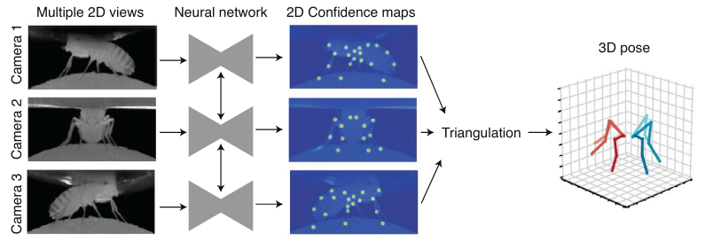

from pathlib import Path
import matplotlib.pyplot as plt
import pandas as pd
import numpy as np
import xarray as xr
from matplotlib import colormaps
from movement import sample_data
from movement.filtering import filter_by_confidence, rolling_filter
from movement.kinematics import compute_speed
from movement.plots import plot_occupancy
from movement.roi import PolygonOfInterest
from movement.transforms import scale5 A mouse’s daily activity log
In this case study, we’ll be using the movement package to dive into mouse home cage monitoring data acquired in Smart-Kages and tracked with DeepLabCut. We’ll explore how mouse activity levels fluctuate throughout the day.
Before you get started, make sure you’ve set up the animals-in-motion-env environment (refer to prerequisites A.3.3) and are using it to run this code. You’ll also need to download the Smart-Kages.zip archive from Dropbox (see prerequisites A.4) and unzip it.
5.1 Import libraries
5.2 The Smart-Kages dataset
Acknowledgement
This dataset was kindly shared by Dr. Loukia Katsouri from the O’Keefe Lab, with permission to use for this workshop.
The Smart-Kages dataset comprises home cage recordings from two mice, each housed in a specialised Smart-Kage (Ho et al. 2023)—a home cage monitoring system equipped with a camera mounted atop the cage.
The camera captures data around the clock at a rate of 2 frames per second, saving a video segment for each hour of the day. A pre-trained DeepLabCut model is then used to predict 8 keypoints on the mouse’s body.
Let’s examine the contents of the downloaded data. You will need to specify the path to the unzipped Smart-Kages folder on your machine.
# Replace with the path to the unzipped Smart-Kages folder on your machine
smart_kages_path = Path.home() / ".movement" / "Smart-Kages"
# Let's visualise the contents of the folder
files = [f.name for f in smart_kages_path.iterdir()]
files.sort()
for file in files:
print(file)The tracking data are stored in two.nc (netCDF) files: kage14 and kage17. netCDF is an HDF5-based file format that can be natively saved/loaded by the xarray library, and is therefore convenient to use with movement.
Apart from these, we also have two .png files: kage14_background.png and kage17_background.png, which constitute frames extracted from the videos.
Let’s take a look at them.
Code
kages = ["kage14", "kage17"]
img_paths = [smart_kages_path / f"{kage}_background.png" for kage in kages]
images = [plt.imread(img_path) for img_path in img_paths]
fig, axes = plt.subplots(nrows=1, ncols=2, figsize=(8, 4))
for i, img in enumerate(images):
axes[i].imshow(img)
axes[i].set_title(f"{kages[i]}")
axes[i].axis("off")
Questions A
- What objects do you see in the habitat?
- What challenges do you anticipate with tracking a mouse in this environment?
- What are the trade-offs one has to consider when designing a continuous monitoring system?
Let’s load and inspect the tracking data:
ds_kages = {} # a dictionary to store kage name -> xarray dataset
for kage in ["kage14", "kage17"]:
ds_kages[kage] = xr.open_dataset(smart_kages_path / f"{kage}.nc")
ds_kages["kage14"] # Change to "kage17" to inspect the other datasetWe see that each dataset contains a huge amount of data, but the two datasets are not exactly aligned in time.
Code
start_times = {
name: pd.Timestamp(ds.time.isel(time=0).values)
for name, ds in ds_kages.items()
}
end_times = {
name: pd.Timestamp(ds.time.isel(time=-1).values)
for name, ds in ds_kages.items()
}
for name in start_times.keys():
print(f"{name}: from {start_times[name]} to {end_times[name]}")5.3 Datetime Coordinates
You might notice something interesting about the time coordinates in these xarray datasets: they’re given in datetime64[ns] format, which means they’re precise timestamps expressed in “calendar time”.
This is different from what we’ve seen before in other movement datasets, where time coordinates are expressed as seconds elapsed since the start of the video, or “elapsed time”.
How did we get these timestamps?
Some recording systems can output timestamps for each video frame. In our case, the raw data from the Smart-Kage system included the start datetime of each 1-hour-long video segment and the precise time difference between the start of each segment and every frame within it.
Using this information, we were able to reconstruct precise datetime coordinates for all frames throughout the entire experiment. We then concatenated the DeepLabCut predictions from all video segments and assigned the datetime coordinates to the resulting dataset. If you’re interested in the details, you can find the code in the smart-kages-movement GitHub repository.
Using “calendar time” is convenient for many applications. For example, we could cross-reference the tracking results against other data sources, such as body weight measurements.
It also allows us to easily select time windows by datetime. We will leverage this here to select a time window that’s common to both kages. Note that we discard the last few days because the experimenter introduced some interventions during that time, which are out of scope for this case study.
common_start = "2024-04-09 00:00:00"
common_end = "2024-05-07 00:00:00"
for kage in ["kage14", "kage17"]:
ds_kages[kage] = ds_kages[kage].sel(time=slice(common_start, common_end))Beyond this ability to select time windows by date and time, we will see many other benefits of using datetime coordinates in the rest of this case study.
That said, it’s still useful to also know the total time elapsed since the start of the experiment. In fact, many movement functions will expect “elapsed time” and may not work with datetime coordinates (for now).
Luckily, it’s easy to convert datetime coordinates to “elapsed time” by simply subtracting the start datetime of the whole experiment from each timestamp.
Expand to see how this can be done
ds_14 = ds_kages["kage14"]
# Get the start datetime the experiment in kage14
experiment_start = ds_14.time.isel(time=0).data
# Subtract the start datetime from each timestamp
time_elapsed = (ds_14.time.data - np.datetime64(experiment_start))
# Convert to seconds
seconds_elapsed = time_elapsed / pd.Timedelta("1s")
# Assign the seconds_elapsed coordinate to the "time" dimension
ds_14 = ds_14.assign_coords(seconds_elapsed=("time", seconds_elapsed))We’ve pre-computed this for convenience and stored it in a secondary time coordinate called seconds_elapsed.
print(ds_14.coords["time"].values[:2])
print(ds_14.coords["seconds_elapsed"].values[:2])Whenever we want to switch to “elapsed time” mode, we can simply set the seconds_elapsed coordinates as the “index” of the time dimension. This means that seconds_elapsed will be used as the primary time coordinate, allowing us to select data by it.
ds_14.set_index(time="seconds_elapsed").sel(time=slice(0, 1800))
Exercise A
For each of the two kages:
- Plot the x-axis position of the mouse’s body center over time, for the week starting on April 15th. What do you notice?
- Plot the median confidence of the body center for each day, over the entire duration of the experiment.
5.4 Cleaning the data
Let’s examine the range of confidence values for each keypoint.
Code
kage = "kage14"
confidence = ds_kages[kage].confidence.squeeze()
fig, ax = plt.subplots(figsize=(8, 3))
confidence.quantile(q=0.25, dim="time").plot.line("o--", color="gray", ax=ax, label="25% quantile")
confidence.quantile(q=0.75, dim="time").plot.line("o--", color="gray", ax=ax, label="75% quantile")
confidence.median(dim="time").plot.line("o-", color="black", ax=ax, label="median")
ax.legend()
ax.set_title(f"{kage} confidence range")
plt.show()It looks like the “neck”, “bodycenter”, “spine1”, and “spine2” keypoints are the most confidently detected. Let us define a list of “reliable” keypoints for later use. These are all on the mouse’s body.
reliable_keypoints = ["neck", "bodycenter", "spine1", "spine2"]We can filter out low-confidence predictions.
confidence_threshold = 0.95
for kage, ds in ds_kages.items():
ds["position_filtered"] = filter_by_confidence(
ds.position,
ds.confidence,
threshold=confidence_threshold,
)
Exercise B
Let’s smooth the data with a rolling median filter.
Hint: Remember doing this in Chapter 4 ?
5.5 Plot the mouse’s speed over time
Let’s define a single-point representation of the mouse’s position, which we’ll call the body_centroid. We derive this by taking the mean of the 4 reliable keypoints, using their smoothed positions.
for kage, ds in ds_kages.items():
ds["body_centroid"] = ds.position_filtered.sel(
individuals="individual_0", # the only individual in the dataset
keypoints=reliable_keypoints
).mean(dim="keypoints")Next, we’ll compute the body centroid’s speed in cm/sec via the following steps:
- Convert the body centroid position data to cm units using
scale(). - Temporarily switch to “elapsed time” mode, because
compute_speed()does not (yet) support datetime coordinates. - Compute the speed in cm/sec
- Restore the original datetime coordinates to the speed data.
PIXELS_PER_CM = 10
for kage, ds in ds_kages.items():
# Scale from pixels to cm using a known conversion factor
body_centroid_cm = scale(
ds.body_centroid, factor=1 / PIXELS_PER_CM, space_unit="cm"
)
# Compute the speed in cm/sec
ds["body_centroid_speed"] = compute_speed(
body_centroid_cm.set_index(time="seconds_elapsed") # switch time coords
).assign_coords(time=body_centroid_cm.time) # restore datetime
ds_kages["kage14"].body_centroid_speedLet’s plot the speed over time.
fig, axes = plt.subplots(
nrows=2, ncols=1, figsize=(8, 5), sharex=True, sharey=True
)
for i, kage in enumerate(["kage14", "kage17"]):
ds_kages[kage].body_centroid_speed.plot.line(ax=axes[i])
axes[i].set_title(f"{kage} body centroid")
axes[i].set_ylabel("speed (cm/sec)")
plt.tight_layout()
plt.show()
Questions B
- What are potential sources of error in the speed calculation?
- What do you notice about the overall speed fluctuations over time? What do you think is the reason for this?
- Do you notice any differences between the two kages? Feel free to “zoom in” on specific time windows to investigate this.
A side-note on 3D pose estimation
With only a single top-down view of the mouse, we are limited to 2D pose estimation. This means the estimated keypoint coordinates are simply projections of the true 3D coordinates onto the 2D image plane.
This is the most common approach to pose estimation, but it cannot accurately measure true dimensions. Any conversion from pixels to physical units (e.g. centimetres) will be imprecise, and sometimes significantly so.
This limitation can be overcome by using multiple cameras from different viewpoints and performing 3D pose estimation. There are two main markerless approaches:
The first approach is to do ‘regular’ 2D pose estimation in each camera view, then triangulate across camera views to estimate 3D pose. The triangulation relies on known parameters about the cameras and their relative positions and orientations. Anipose (Karashchuk et al. 2021) is a popular open-source toolkit that implements this approach.

Source: Pereira, Shaevitz, and Murthy (2020) The second approach, implemented in DANNCE (Dunn et al. 2021), is to use a fully 3D convolutional neural network (CNN) that can learn about 3D image features and how cameras and landmarks relate to one another in 3D space.
Some prompts for discussion:
- What are the pros and cons of 2D vs 3D markerless pose estimation?
- In which scenarios would you prefer one over the other?
5.6 Plot actograms
An actogram is a visualisation of the mouse’s activity level over time.
As a measure of activity we’ll use the cumulative distance traversed by the mouse’s body centroid in a given time bin—in this case, 10 minutes. Since we have already computed the speed (cm/sec), we can multiply that by the time bin duration in seconds to get the distance (cm).
for kage in ["kage14", "kage17"]:
time_diff = ds_kages[kage].coords["seconds_elapsed"].diff(dim="time")
ds_kages[kage]["distance"] = ds_kages[kage].body_centroid_speed * time_diffThen we can sum the distance traversed in each time bin to get the activity level.
time_bin_minutes = 10
time_bin_duration = pd.Timedelta(f"{time_bin_minutes}min")
fig, ax = plt.subplots(
nrows=2, ncols=1, figsize=(8, 5), sharex=True, sharey=True
)
activity_dict = {} # Dictionary to store the activity levels for each kage
for i, kage in enumerate(["kage14", "kage17"]):
activity = ds_kages[kage].distance.resample(time=time_bin_duration).sum()
activity.plot.line(ax=ax[i])
ax[i].set_title(f"{kage} activity")
ax[i].set_ylabel("distance (cm)")
ax[i].set_xlabel("time")
activity_dict[kage] = activity
plt.tight_layout()
plt.show()To make any circadian patterns more apparent, we will stack days vertically and indicate the light cycle with gray areas. For this particular experiment, the light cycle is as follows:
- lights off at 9:30
- dawn at 20:30
- lights on at 21:30
# Define light cycle (in minutes since midnight)
lights_off = 9 * 60 + 30 # 9:30 AM in minutes
dawn = 20 * 60 + 30 # 8:30 PM in minutes
lights_on = 21 * 60 + 30 # 9:30 PM in minutes
n_bins_in_day = int(24 * 60 / time_bin_minutes)
actogram_dict = {} # Dictionary to store the 2D actogram for each kage
for i, kage in enumerate(["kage14", "kage17"]):
activity = activity_dict[kage]
days = list(activity.groupby("time.date").groups.keys())
# Create an empty 2D actogram with dims (date, time_bin)
actogram = xr.DataArray(
np.zeros((len(days), n_bins_in_day)),
dims=["date", "time_of_day"],
coords={
"date": days,
"time_of_day": np.arange(
time_bin_minutes/2, 24 * 60, time_bin_minutes
)
},
)
# Populate 2D actogram per day
for date, day_activity in activity.groupby("time.date"):
actogram.loc[dict(date=date)] = day_activity.values
# Store the actogram in the dictionary for later use
actogram_dict[kage] = actogram
actogram_dict["kage14"] # Replace with kage17 to see the actogram for kage17Let’s now visualise the actograms, with the light cycle marked.
Code
max_activity = max(
actogram_dict[kage].max().values for kage in ["kage14", "kage17"]
)
fig, axes = plt.subplots(
nrows=2, ncols=1, figsize=(8, 8), sharex=True, sharey=True,
)
for i, kage in enumerate(["kage14", "kage17"]):
actogram = actogram_dict[kage]
# Create a colormap for the actogram
cmap = colormaps.get_cmap("Greys")
cmap.set_bad(color="brown", alpha=0.5) # Set bad values to red
# Plot the actogram
ax = axes[i]
actogram.plot(
ax=ax, yincrease=False, vmin=0, vmax=max_activity, cmap=cmap
)
# Assign x-tick labels every 4 hours formatted as HH:MM
ax.set_xticks(np.arange(0, 24 * 60 + 1, 4 * 60))
ax.set_xticklabels([f"{i:02d}:00" for i in np.arange(0, 25, 4)])
# Mark light cycle
ax.axvline(lights_off, color="red", alpha=0.7, lw=2, linestyle="-", label="lights off")
ax.axvline(dawn, color="blue", alpha=0.7, lw=2, linestyle="--", label="dawn")
ax.axvline(lights_on, color="blue", alpha=0.7, lw=2, linestyle="-", label="lights on")
ax.legend(loc="lower left")
# Set title and axis labels
ax.set_title(f"{kage} actogram")
ax.set_xlabel("Time of day")
plt.tight_layout()
plt.show()
Exercise C
- How would you describe the observed differences between the two mice?
- Compute the mean activity profile (across days) for each mouse.
- Plot the mean activity profile for each mouse, with the light cycle marked.
Hint: Start with the actogram_dict dictionary and also make use of the lights_off and lights_on variables defined above.
What underlies the differences in activity?
The mouse in kage17 is a genetically modified model of Down Syndrome. The syndrome, also known as trisomy 21, is caused in humans by the presence of all or part of a third copy of chromosome 21. The mouse in kage17 is genetically modified with a triplication of mouse chromosome 16, which carries about 150 genes homologues to the human chromosome 21.
Loukia is currently investigating why this particular mouse model exhibits a “restless” behavioural phenotype.
5.7 Space occupancy
Apart from quantifying how active the mice were over time, we might also be interested in which parts of the habitat they tend to frequent.
movement provides a plot_occupancy() function to help us visualise the space occupancy.
fig, axes = plt.subplots(
nrows=1, ncols=2, figsize=(8, 4), sharex=True, sharey=True
)
plt.suptitle("Body centroid occupancy (log scale)")
for i, kage in enumerate(["kage14", "kage17"]):
img = images[i]
height, width = img.shape[:2]
axes[i].imshow(img)
plot_occupancy(
# Setting the time coordinates to "elapsed time" is necessary
# for the log scale to work properly.
ds_kages[kage].body_centroid.set_index(time="seconds_elapsed"),
ax=axes[i],
cmap="turbo",
norm="log", # log scale the colormap
vmax=10**6,
alpha=0.6, # some transparency
)
# Make axes match the image dimensions
axes[i].set_ylim([height - 1, 0])
axes[i].set_xlim([0, width])
axes[i].set_title(kage)
plt.tight_layout()
plt.show()We see some clear hotspots, such as the nest and climbing platform. But not all hotspots are created equal. For example, the nest should be occupied when the mouse is stationary but not when it is moving.
To investigate this, let’s choose an arbitrary speed limit of 4 cm/sec, below which we consider the mouse to be stationary.
Code
fig, ax = plt.subplots(figsize=(8, 4))
speed_threshold = 4
for kage in ["kage14", "kage17"]:
ds_kages[kage].body_centroid_speed.plot.hist(
ax=ax, bins=50, alpha=0.5, label=kage, histtype="step",
)
ax.axvline(speed_threshold, linestyle="--", color="red", label="Speed threshold")
ax.set_title("Body centroid speed")
ax.set_xlabel("Speed (cm/sec)")
ax.set_ylabel("Count")
ax.set_yscale("log")
ax.legend()
plt.show()
Note
We use the log scale because speeds tend to be exponentially distributed, i.e. the mouse spends far more time at low speeds than at high speeds. Try commenting out the ax.set_yscale("log") line and see what happens.
We will generate separate occupancy heatmaps for when the mouse is stationary vs moving. We can do this by masking with where().
stationary_mask = ds_kages["kage14"].body_centroid_speed < 4
stationary_maskA “mask” is just a boolean array of the same shape as the original data. It’s True where the condition is met, and False otherwise.
stationary_position = ds_kages["kage14"].body_centroid.where(stationary_mask)
stationary_positionWe see that the where() method returns a new xarray.DataArray with the same dimensions as the original, but with the data values replaced by NaN where the condition (mask) is False.
Using this approach we can generate separate the body centroid position arrays into states where the mouse is stationary vs moving, and then plot the occupancy heatmaps for each state.
Code
fig, axes = plt.subplots(
nrows=2, ncols=2, figsize=(8, 8), sharex=True, sharey=True
)
plt.suptitle("Body centroid occupancy (log scale)")
for i, kage in enumerate(["kage14", "kage17"]):
img = images[i]
height, width = img.shape[:2]
masks = {
"stationary": ds_kages[kage].body_centroid_speed < 4,
"moving": ds_kages[kage].body_centroid_speed >= 4,
}
for j, (mask_name, mask) in enumerate(masks.items()):
ax = axes[i, j]
ax.imshow(img)
plot_occupancy(
ds_kages[kage].body_centroid.where(mask).set_index(time="seconds_elapsed"),
ax=ax,
cmap="turbo",
norm="log",
vmax=10**6,
alpha=0.6,
)
ax.set_title(f"{kage} {mask_name}")
ax.set_ylim([height - 1, 0])
ax.set_xlim([0, width])
plt.tight_layout()
plt.show()We see some expected patterns like the nest being a “hotspot” during stationary periods, and going “dark” during active periods. But we also see some puzzling patterns: for example, the running wheel is occupied during both periods, including when the mouse is “stationary”.
Is that because the mouse appears to be stationary to the camera as it’s running “in-place” on the wheel (like on a treadmill)? Or maybe the mouse spends some of its downtime resting on the wheel?
5.8 Region of interest occupancy
Let us precisely measure running wheel occupancy, i.e. the proportion of time the mouse spends on the running wheel. Here we’ll use movement’s functionality for defining regions of interest (ROIs).
Let us create a circular “running wheel” ROI for each of the two kages.
centres = {
"kage14": np.array([145, 260]), # (x, y)
"kage17": np.array([385, 210]),
}
radius = 70
# Create a unit circle
n_points = 32
angles = np.linspace(0, 2 * np.pi, n_points)
unit_circle = np.column_stack([np.cos(angles), np.sin(angles)])
# Create ROIs by scaling and shifting the unit circle
rois = {}
for kage in ["kage14", "kage17"]:
points = centres[kage] + radius * unit_circle
roi = PolygonOfInterest(points, name=f"{kage} running wheel")
rois[kage] = roi
Note
Admittedly, this is not the most precise or convenient way to define the running wheel ROI. It would be better to directly draw shapes on the video frames.
We are actively working on a widget in napari that will enable this. Stay tuned for updates in movement by joining the “movement” channel on Zulip.
Now that we have the ROIs defined as PolygonOfInterest objects, we can use some of their built-in methods.
For example, we can use .plot() to visualise the ROIs and verify that they are roughly in the right place.
Code
fig, ax = plt.subplots(nrows=1, ncols=2, figsize=(8, 8))
for i, kage in enumerate(["kage14", "kage17"]):
img = images[i]
ax[i].imshow(img)
rois[kage].plot(ax=ax[i], alpha=0.25, facecolor="red")
ax[i].legend()
plt.tight_layout()
plt.show()We can also use .contains_point() to check if a point is inside the ROI. If we pass it a whole xarray.DataArray of points positions, e.g. the positions of the mouse’s body centroid over time, the check is performed for each point in the array.
Warning
The following code cell will take a while to run, probably a few minutes. That’s because we have a large amount of data and the .contains_point() method is not fully optimised yet.
If you are an experienced Python programmer this could be a cool project for the hackday.
roi_occupancy = {
kage: rois[kage].contains_point(ds_kages[kage].body_centroid)
for kage in ["kage14", "kage17"]
}
roi_occupancy["kage14"]The ROI occupancy data is a boolean array which is True when a point (in this case the mouse’s body centroid at each time point) is inside the ROI, and False otherwise.
Code
fig, axes = plt.subplots(
nrows=2, ncols=1, figsize=(7.5, 5), sharex=True, sharey=True
)
for i, kage in enumerate(["kage14", "kage17"]):
ax = axes[i]
roi_occupancy[kage].sel(time=slice(None, "2024-04-09 23:59:59")).plot.line(
"-", ax=ax, lw=0.1
)
ax.set_title(kage)
ax.set_ylabel("Occupancy")
ax.set_yticks([0, 1])
ax.set_yticklabels(["False", "True"])
plt.tight_layout()
plt.show()We can also compute the % of time the mouse spends on the running wheel.
for kage in ["kage14", "kage17"]:
# Count the ratio of True values in the array
on_wheel_ratio = roi_occupancy[kage].mean(dim="time").values
# Convert to percentage
pct_on_wheel = float(100 * on_wheel_ratio)
print(f"{kage} spends {pct_on_wheel:.1f}% of its time on the running wheel")But how does the running wheel occupancy relate to the light cycle? We can segment the ROI occupancy data into dark and light periods for each day and compute the % of time spent on the running wheel during each period.
Code
days = list(
roi_occupancy["kage14"].dropna(dim="time").groupby("time.date").groups.keys()
)
n_days = len(days)
# Create a new DataArray of NaNs with shape (kage, date, period)
daily_occupancy = xr.DataArray(
np.full((2, n_days, 2), np.nan),
dims=["kage", "date", "period"],
coords={
"kage": ["kage14", "kage17"],
"date": days,
"period": ["dark", "light"]
},
)
for kage in ["kage14", "kage17"]:
for date, day_ds in roi_occupancy[kage].dropna(dim="time").groupby("time.date"):
dark_period = slice(f"{date} 09:30:00", f"{date} 21:30:00")
light_period1 = slice(f"{date} 00:00:00", f"{date} 09:30:00")
light_period2 = slice(f"{date} 21:30:00", f"{date} 23:59:59")
dark_occupancy = 100 * day_ds.sel(time=dark_period).mean()
light_occupancy = 100 * (
day_ds.sel(time=light_period1).mean() +
day_ds.sel(time=light_period2).mean()
)
daily_occupancy.loc[dict(kage=kage, date=date, period="dark")] = dark_occupancy
daily_occupancy.loc[dict(kage=kage, date=date, period="light")] = light_occupancydaily_occupancyLet’s visualise the % of time spent on the running wheel during the light and dark periods of each day.
Code
fig, axes = plt.subplots(nrows=1, ncols=2, figsize=(8, 4), sharex=True, sharey=True)
max_occupancy = daily_occupancy.max()
for i, kage in enumerate(["kage14", "kage17"]):
daily_occupancy.sel(kage=kage).plot(
ax=axes[i], lw=3, vmax=daily_occupancy.max(), yincrease=False
)
axes[i].set_title(f"{kage} running wheel occupancy")
axes[i].set_xticks([0.25, 0.75])
axes[i].set_ylabel("Occupancy (%)")
axes[i].set_xlabel("Period")
plt.tight_layout()
plt.show()As we would expect, both mice tend to spend more time on the running wheel during the dark (active) periods.
Even though the mouse in kage17 is more active overall, as we saw in Section 5.6, it spends less time on the running wheel compared to the mouse in kage14.